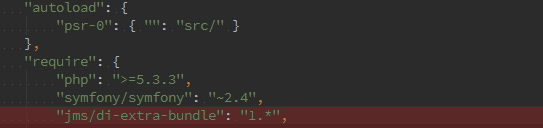

JMSDiExtraBundle
Why and how
The challenge
Configuration of services for project
- location
- format
- structure
Location
- /app/config
- /yourBundle/Resources/config
Format
INI - limited
Advantages of using XML:
- http://symfony.com/schema/dic/services/services-1.0.xsd
- IDE autocomplete, etc
Structure
One huge file

Plenty of small files

The amount of configuration can overload
PHP 5.5 EE
Is there any hope?
There is...

JMSDiExtraBundle adds more powerful dependency injection features to Symfony2 and let's you:
- configure dependency injection via annotations
- convention-based dependency injection in controllers and services
Examples:
- define service
- constructor injection
- property injection
- method/getter injection
- define service
class ProblemSolver
{
public function doTheMagic() {
return 42;
}
}
use JMS\DiExtraBundle\Annotation\Service;
/** @Service("some.service.id") */
class ProblemSolver
{
public function doTheMagic() {
return 42;
}
}
- constructor injection
/** @Service("some.service.id") */
class ProblemSolver
{
private $em;
public function __construct(EntityManager $em)
{
$this->em = $em;
}
public function doTheMagic() { ... }
}
use JMS\DiExtraBundle\Annotation as DI;
/** @Service("some.service.id") */
class ProblemSolver
{
private $em;
/**
* @DI\InjectParams({"em" = @DI\Inject("doctrine.orm.entity_manager")})
* @param EntityManager $em
*/
public function __construct(EntityManager $em)
{
$this->em = $em;
}
}
- property injection
/** @Service("some.service.id") */
class ProblemSolver
{
private $em;
private $cacheDir;
public function __construct(EntityManager $em)
{
$this->em = $em;
}
public function doTheMagic() { ... }
}
use JMS\DiExtraBundle\Annotation\Inject;
class ProblemSolver
{
/** @Inject("doctrine.orm.entity_manager") */
public $em;
/** @Inject("%kernel.cache_dir%") */
public $cacheDir;
public function doTheMagic() { ... }
}
- method/getter injection, lazy initialization
class DefaultController extends Controller
{
/** @Route("/") */
public function indexAction()
{
$out = ';(';
if ($this->getMailer() instanceof \Swift_Mailer) {
$out = ';)';
}
return new Response($out);
}
/** @DI\LookupMethod("mailer") */
protected function getMailer() { /* Nothing here */}
works only in controller
no benefits over $this->get('mailer')
Possibilities
@Inject("security.context", required = false)
@Inject("request", strict = false)
@Service("some.service.id", parent="another.service.id", public=false)
@Tag("doctrine.event_listener", attributes = {"event" = "postGenerateSchema"})
@Observe("kernel.request", priority = 255) - Automatically registers a method
as listener to a certain event:
@Observe(KernelEvents::REQUEST, priority = 255)
Possibilities 2
@Validator("my_alias")
@FormType
@DoctrineListener or @DoctrineMongoDBListener
class Controller
{
/** @Inject */
private $session;
Worth to know:
- lack of support of lazy services - think twice your services hierarchy
- SSD is a must for huge projects in dev mode
- development of this bundle seems to be ended
- property injection - must be public, free access
- ... but there is constructor injection ... if you like
Tests
/**
* @DI\Service("mrok.problem_solver")
*/
class ProblemSolver
{
/** @DI\Inject(required = false) */
public $mailer;
public function doTheMagic()
{
return (isset($this->mailer)) ? 42 : -1;
}
}
class ProblemSolverTest extends \PHPUnit_Framework_TestCase
{
public function testDoTheMagic()
{
$ps = new ProblemSolver();
$mock = \Mockery::mock('swift_mailer');
$mock->shouldReceive('send')->times(0);
$ps->mailer = $mock;
$this->assertEquals(42, $ps->doTheMagic());
}
public function doTheMagicNoMailer()
{
$ps = new ProblemSolver();
$this->assertEquals(-1, $ps->doTheMagic());
}
/**
* @test
* Obtain services from container, jmsdi in use
*/
public function doTheMagicWithContainer()
{
$kernel = self::createKernel();
$kernel->boot();
$this->problemSolver = $kernel->getContainer()
->get('mrok.problem_solver');
$this->assertEquals(42, $this->problemSolver->doTheMagic());
}
More info:
Project page: http://jmsyst.com/bundles/JMSDiExtraBundle/1.1Github: https://github.com/schmittjoh/JMSDiExtraBundle
Bonus - info for new jedi:
 A Year With Symfony by Matthias Noback
A Year With Symfony by Matthias Noback